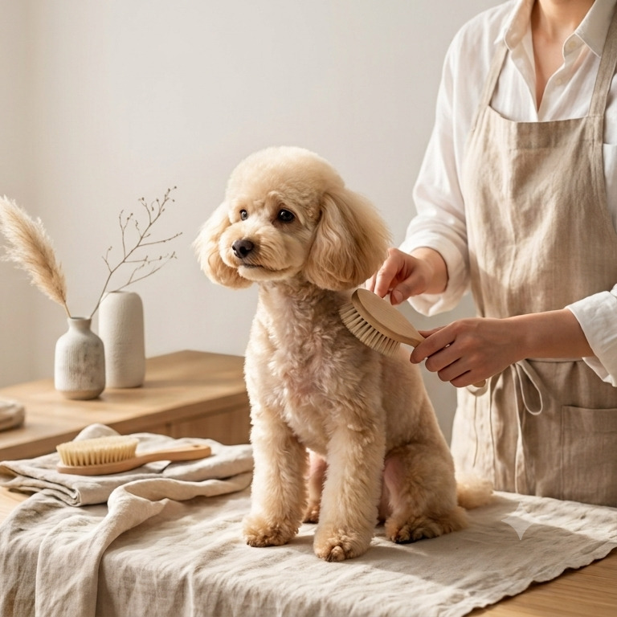

Story / Process
静かな流れで、
静かな流れで、
かたちにしていく。
制作は、順番を急ぎません。 言葉になる前の想いを聞き、時間をかけて整理し、 設計に落とし込み、形にしてからも、育てていく。 縁側を歩くように、一歩ずつ進みます。
-
01
話す
まずはお話をうかがいます。事業のことだけでなく、大切にしていることや、これからの暮らし方まで。
-
02
整理する
伺った言葉を、そのまま形にはしません。一度持ち帰り、伝えたいことの芯を探します。
-
03
設計する
情報の流れ、余白、写真の呼吸。ページを読む人の視線を想像しながら、静かに組み立てます。
-
04
形にする
デザインとコーディングを一人で行い、細部の質感まで、責任を持って仕上げます。
-
05
育てる
公開して終わりではありません。使いながら見えてくる違和感に、その都度向き合っていきます。